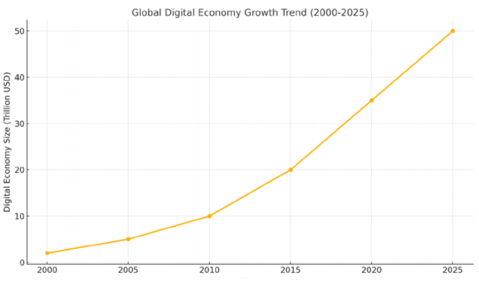

TL;DR: AI agents fundamentally devalue the creation of software code, which has been the main asset of the “app” economy. Therefore, the value chain in tech will have to shift elsewhere. This agentic AI era will be marked by a transition from à “code-as-value” economy to a “data-and-access-as-value” digital economy.
When “There’s an App for That’’ Stops Making Sense
A few days ago, I found my father using ChatGPT to keep track of the mineral content of different water bottles. He’d snap a picture to ChatGPT and ask it to compare it to the previous ones he added. An excellent use of the AI’s computer vision capabilities, except that it was hallucinating the records, giving him made-up data each time.
That night, I built him a simple app using Google’s AI Studio. It transcribes pictures using Gemini’s free API key (even low quality ones), saves the results in a small database, and generates an interactive dashboard. It wasn’t polished, but it did exactly what it needed to. It took ~20 minutes.
For the past 15 years, apps have been the backbone of the digital economy. Until now, building one used to require design skills, backend development, and careful deployment. But with tools like Cursor, Claude Code, and Google’s AI Studio, creating an app is no longer a project; it’s a moment.
And that’s when I started thinking: What happens when everyone can build their own app? What will the digital economy look like if code is cheap and instantaneous?
AquaCompare - the first App I ever made
What Is the Future of Apps?
As a policy analyst, I try to stay up to date with all AI news, focusing less on how many billion parameters were used to train the latest model and more on what those models can actually do in the real world. From my perspective, it is almost impossible to overstate how fast progress is being made in the AI world:
- 2022: ChatGPT popularizes large language models (LLMs), officially launching the era of generative AI.
- 2023: We see the rise of ChatGPT competitors like Gemini and DeepSeek, but also the emergence of AI tools that are built on top of LLM models designed to execute specialized tasks, such as Google’s NotebookLM.
- 2024: AI agents emerge. Unlike simple LLMs and specialized tools, agents observe their digital environment, plan, and execute coherently across multiple files and systems.
- 2025: Agentic AI systems go mainstream. We now have research agents that browse the web, administrative agents integrated with calendars and internal company systems, and general-purpose agents like Manus, which basically has its own computer.
In my view, the rise of agentic AI is similar to the invention of the Internet. Put simply, AI agents are goal-oriented systems that perceive their environment and can take initiative on how exactly to achieve their end goal. While they offer a wide range of use cases with real economic value, they have been especially transformative for coding.

Simple agent -Wikipedia
AI systems can now autonomously plan and execute multi-step coding tasks, coordinating coherent changes across multiple files to achieve the general goals set by the user. This has given rise to “Vibe Coding,” which allows people to “one-shot” a coding project, with an AI generating a functional web or mobile application on the first attempt, including fully operational internal systems.
Given the speed of the progress, it’s not hard to imagine that, soon enough, this generative coding capacity will be available on the App Store for everyone to use. At that point, will we even need smartphones as we know them today?
The End of Apps & the World of AI Operating Systems
Apps today serve as the user interface for digital interaction, as HTML pages did before them. However, because software is now easy to generate, we’ll soon see an explosion of niche, short-lived applications created instantly for a specific need and then discarded when no longer necessary (ephemeral code). Think about what you need, tell your AI, and in a few minutes, you will receive a functional version ready for your approval. After some feedback and refinements, the code is yours to use forever or just once.
Therefore, in the near future, digital innovation won’t reside in the functionality of the code, but in the way you experience and interface with the information it produces. The interface of the future isn’t a screen full of icons, but an intelligent overlay powered by agents that continuously write software around you. For this reason, I believe that the upcoming digital era (Web3.2?) won’t be about individual apps but about AI-native operating systems (OS).
Your AI OS will coordinate a small army of specialized agents to manage your different interactions with the digital world. For example, Meta could integrate with your AI OS to create a deeply personalized social media experience. Imagine asking your assistant:
Create a morning newspaper for me every day from my friends’ posts, just text, no videos.
Your AI would fetch updates on your friends from Meta’s API, summarize them, and deliver them in a clean, newspaper-like layout. For a different user, the same exact data could power dynamic videos generated in their preferred format.
Show me a highlight reel of what my friends did yesterday, narrated by David Attenborough.
This isn’t science fiction; all the components already exist: social media APIs, generative models, and AI integration protocols. Big tech sees what’s coming. That’s why companies are investing in new coordination layers and protocols like MCP, AP2, and other frameworks for AI integration. While the value of an individual agent will be low, the value of à platform that coordinates hundreds of specialized agents to accomplish complex tasks will be immense. We will hence witness the rise of the “Orchestrator”, the AI Operating System through which users interface with the digital world.
Global Digital economy 2000-2025 (Yin et al., 2024)
What’s changing is that OpenAI has recently taken a step in this direction. During its Spring 2025 event, the AI giant announced that other companies can now build apps inside ChatGPT, allowing users to perform actions they would normally do on an app or website. In this new generation of “apps you can chat with’’, users can already interact with Spotify to create a playlist, or with Booking.com to plan their vacation, all without ever opening their applications.
While digital companies used to compete on features like an intuitive “drag-and-drop’’ interface, ChatGPT now instantly generates that interface, what matters more is the quality of the workflow and database powering it. This also creates new gatekeepers of the digital economy. If agents become the primary way users interact with digital services, the company that controls the permission layer - the handshake between the agent and the service - effectively owns the transaction. In essence, the center of gravity of the digital economy is shifting from the ownership of proprietary interfaces to the ownership of useful and trusted databases. This will not only be transformative but also completely disruptive to the digital economy as we know it today.
The Future of the Digital Economy
If code is cheap and instantly generated, the value chain in tech will need to shift elsewhere. While much of it will shift upwards towards functions like AI engineering and downwards towards data centers, value within the wider digital economy will be created by providing the data and context that feed AI generation and make it useful.
Beyond competition over AI infrastructure between tech giants, the real differentiator of added value for the wider digital economy will be how well AI can make use of your data. In the end, the winners of the digital economy will be the companies that best integrate with AI systems, ensuring that future AI integrations happen on their terms by providing useful and scalable building blocks. For most firms outside the AI core, the win is not about creating a new AI model. It is turning their domain knowledge into trusted, well-documented building blocks that agents can make valuable.
Example
The first HR platform that builds an innovative data architecture that allows for the perfect assessment of an applicant’s skills without exposing any personal information, and releases an API for it, will be embedded by agents into thousands of workflows without users ever opening its app.
Just as Lego bricks can be assembled reliably into anything from a castle to a spaceship, good digital building blocks will let AI systems assemble whatever their final user needs. Put together by intelligent agents, these data blocks will form an AI integration economy that rewards openness and interoperability. As AI models become commoditized, the unique, proprietary, and high-quality data used to train agents and the context supplied to them at runtime become the competitive differentiator.
Final thoughts & Implications
Apps won’t disappear, but their primacy will vanish into agentic ecosystems. When code ownership becomes less valuable, a durable advantage will live in data quality, integration rails, and trust. AI Operating systems will be the orchestrators of the new digital economy, while the new added value for the wider economy will be high-quality databases, smart context, and trusted integration rails (APIs, SDKs) that will guide agents as they interact with the world.
What matters more than owning code? The context and policy environment in which the code operates. Governments need to clarify and advance:
- Liability in Agentic Chains: Clarify responsibility across model providers, integrators, and data controllers.
- Interoperability & Trust: Enforce practical data export and API standards to allow for improved security and audits.
- Competition & Monopolization: Monitor AI platforms that can skew preference within their ecosystem services.
- Security/Compliance: Cheap code ≠ secure code; impose new certifications of cybersecurity, adapted to the AI era, on regulated sectors.
The winners in this new economy will not only be those who control the AI operating systems, but also those who control the data infrastructure that makes them useful. The firms (and governments) that package their domain into agent-ready building blocks will set the terms of the next decade.